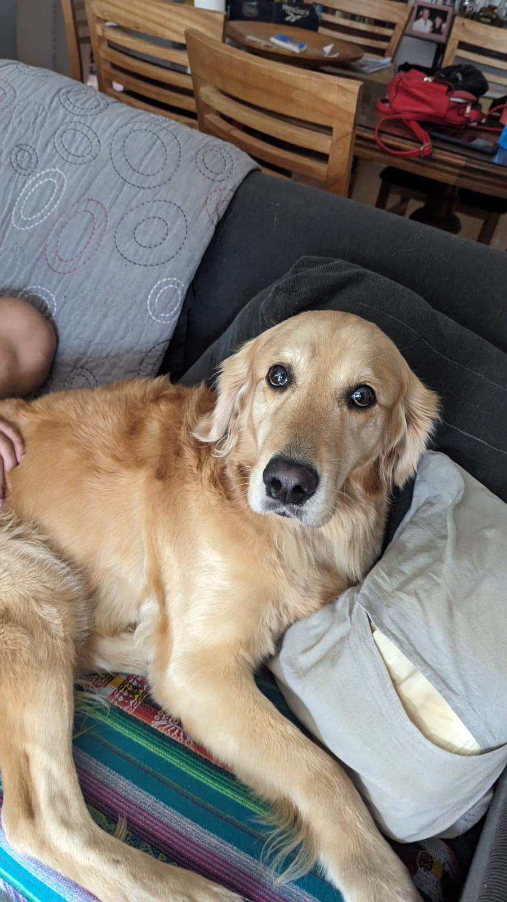
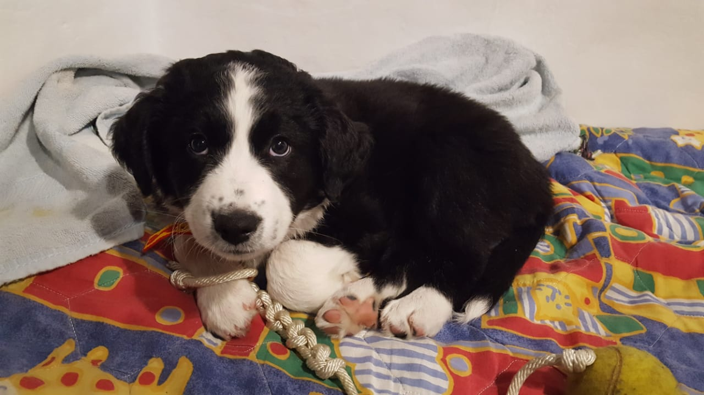
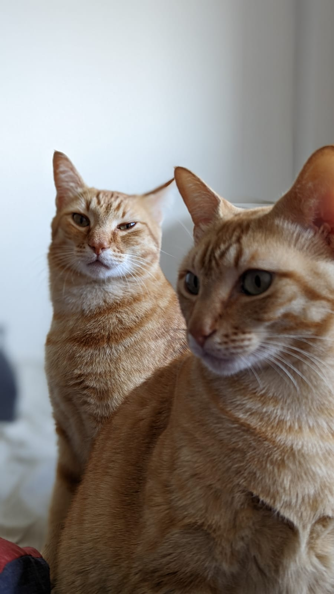
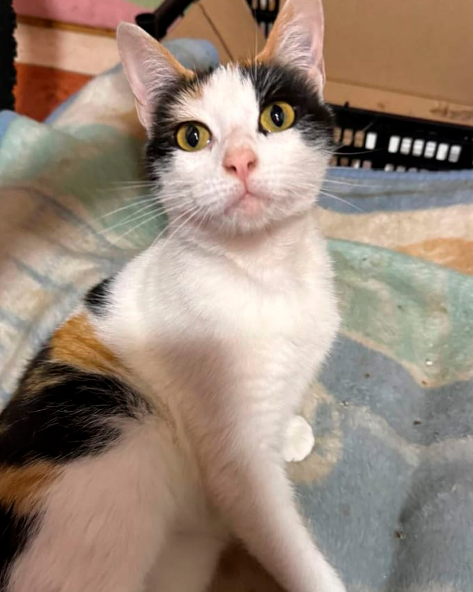
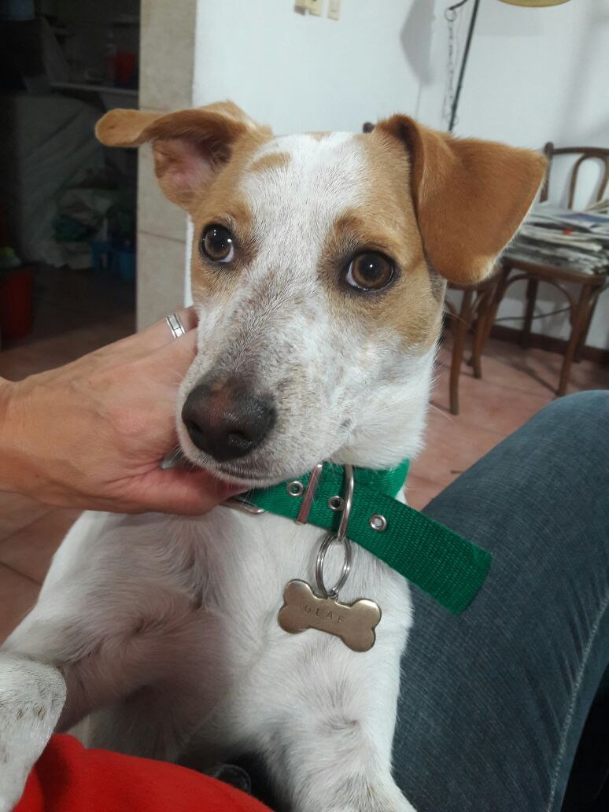

En Adopción
Nos esforzamos para brindar a la persona que quiere tener una mascota las características de nuestros animales, bien conocidas por nosotros al estar en contacto con ellos. De esta manera, permitimos que tanto la familia como el animal, tengan una rápida adaptación a este nuevo vínculo. Hay tanta variabilidad en el comportamiento de los animales como en los humanos, entonces no cualquier animal es apto para cualquier persona y para cualquier hábitat. Con esta consigna creemos necesario que la nueva relación sea de mutuo entendimiento y satisfacción. Es por eso que antes de dar en adopción al animal hacemos determinadas preguntas relacionadas con el tipo de ambiente que tendrá el animal y la composición del núcleo familiar, si el animal estará en contacto con niños, si vivirá en un jardín o en un departamento, etc.
India - Hembra, 3 años
Muy cariñosa, inteligente, y obediente.
-------------------------------------
Tota - Hembra, 6 meses
Cachorrita hermosa muy amorosa.
-------------------------------------
Freddie y Mercury - Machos, 6 años
Gatos hermanos inseparables.
-------------------------------------
Lila - Hembra, 9 años
Gata mayor muy tranquila.
-------------------------------------
Olaf - Macho, 3 años
Muy energético, no recomendado para hábitats pequeños.
-------------------------------------